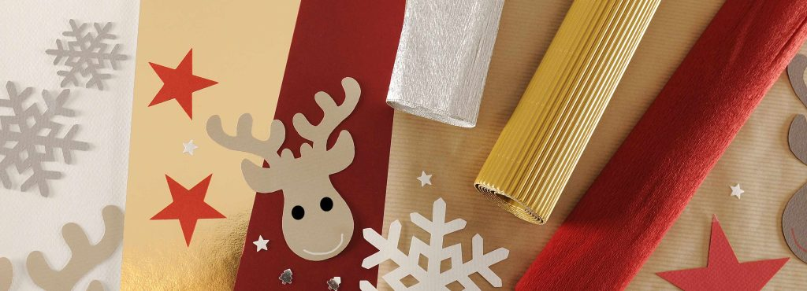

Canson is a legendary brand with roots dating back to 1557 in France. Renowned for producing some of the finest art and specialty papers in the world, Canson has been the choice of artists for centuries — from Leonardo da Vinci to contemporary creators. The brand offers premium-quality sketch pads, watercolor paper, pastel sheets, and more. Known for its dedication to excellence, Canson’s products cater to artists, designers, students, and professionals who seek superior surfaces to bring their visions to life.
 ← Back to Brands